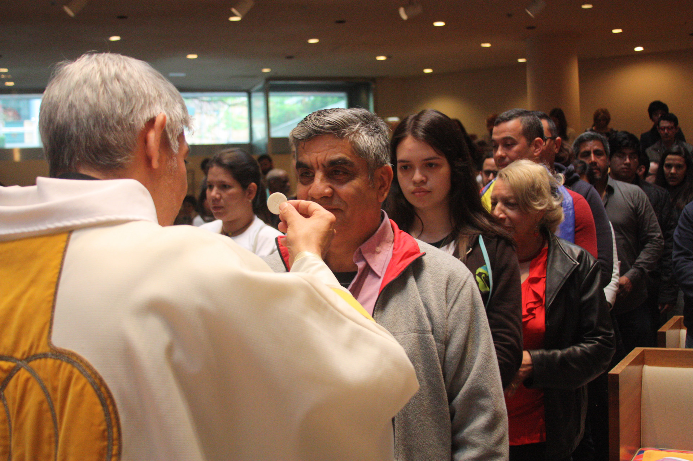

The Stand of
Father Fabián
A priest and his church take on a modern underground railroad to provide legal status to undocumented minors in New York.
Hermes Espinoza was 17 when he reached a breaking point. Alone, without any family or legal status, his ability to remain in the United States was in danger. He had crossed the border from Mexico to the United States a year earlier, in 2007, looking to escape the discrimination he faced in his home state of Guerrero for being homosexual. He spent his first year in the United States looking for a sense of family and belonging. Unable to find it, he tried to commit suicide. Then, a friend referred the name of a priest in a church in Midtown, Manhattan, famously open to the LGBTQ community. This was the Church of Sión, a congregation led by Father Fabián Arias.
In the midst of his desperate search to find a legal way to stay in the United States, his visits to the church became more frequent. He soon became the youngest member in the church’s religious services, and forged a special relationship with the community and its priest. Hermes responded to the the support he found in the church by introducing the congregants to an important part of his Mexican culture, the Virgin of Guadalupe. Feeling like he was running out of options, Hermes decided to ask Fabian to legally "adopt" him. This way, he reasoned, he could obtain permanent residency.
And so Sión’s Father "adopted" his first son.

At the time, neither of them imagined that they would be part of a new, extended family that would continue. In the next ten years, Fabian would take on the legal guardianship of 26 unaccompanied minors. He has served as a liaison for different members of the church to take legal guardianshiop of others as well.
The Argentine priest has lived in New York since 2002, and is the leader of a Lutheran congregation that welcomes a community of 300 immigrants. All of them regularly attend the church’s decidedly Latin American-influenced services, where the mass is held in Spanish. It's the Hispanic congregation of Saint Peter's, a sanctuary church.
Undocumented immigrants make up 80 percent of the community, the father says. The church is one of 12 religious organizations that are a part of the New Sanctuary Church Movement of New York. About 800 organizations have joined the movement in the country, where they stand for for the protection of undocumented immigrants. Their methods vary, but most sanctuary churches are part of a loose coalition that make up a growing resistance to anti-immigration policies in the United States.
In 2016, border patrol and ICE agents deported 450,954 undocumented immigrants, according to the 2016 fiscal year report of the Department of Homeland Security. These are numbers that grow year after year. To date there have been almost 5 million deportations and nearly half have not been related to criminal violations.
During the presidencies of George W. Bush and Barack Obama, there has been a continuing 16-year trend in the policing of undocumented immigrants. Now, President Donald Trump’s aggressive anti-immigration rhetoric and executive orders escalate the level of fear and intimidation in communities around the country, like the one in the Church of Sión.
But how far is Father Fabián and his congregation willing to go to help those who are in danger of being deported?
Fabián’s List
Fabián is not the only one who obtains guardianship of minors, but he pioneered the process that the Church of Sión still follows. By taking legal guardianship of Hermes, Fabián brought his desire to help the immigrant community in New York City to a new level.
But, Hermes was a special case from the beginning. His past summarizes several of the traumas that often mark the lives of all immigrants. When he was eight, one of his brothers was killed because of his sexual orientation. When he was 16, Hermes decided to cross the desert of Nogales, Arizona, and reach the nearest areas of California. He was fleeing the violence in Guerrero, in hopes of not ending up like his brother.
For Fabián, Hermes’s case gave him the chance to act on a growing concern that had been building up since he moved to the city. Having arrived as a Catholic priest, he began to question his faith. His transition to the New York Lutheran Church was an ethical decision. He said he began to see Lutheranism as "more in line with the reality of life, which understands that if two people love each other, they can marry even if they are both of the same sex, or have divorced from previous couples."
"What we are experiencing now does not compare with that time," the father explained, referring to the immigration raids that took place in working factories during the Bush administration. The “witch hunt" against immigrants increased deportations between 1996 and 1997 by 39.1 percent, according to data in the historical archive of Homeland Security.

At that time, the Illegal Immigration Reform and Immigrant Responsibility Act (IIRAIRA) of 1996 allowed agencies like ICE to deport anyone who overstayed their permits to be in the country.
Fabián recognizes that the vulnerability that undocumented immigrants are now exposed to is not new. Trump's anti-immigrant remarks appear more strongly and frequently in the media. "This is an aggressive political model. It is an antihuman model, which does not respect civil rights," Fabian said.
Before leading the Church of Sión, he was director of the New Sanctuary Movement for five years, a modern movement that follows the former sanctuary movement of the 1980s, started by John Fife, a pastor from Arizona. Fife objected intervention in his church by authorities, and welcomed migrants fleeing violence in Central America.
In 2008, when he took guardianship of Hermes, Fabián saw the opportunity to take the next step in his activism. After assuming Hermes’s legal guardianship, the news of the "adoption" soon spread throughout the community. Teenagers started coming in to the church one by one, and sometimes, two by two. They all wanted to be adopted as well. After Hermes, it was Darwin. Then came Gloria, Brian, Blanca, Juan Carlos, Octavio, Lucas, Michael, Allan, Yovanis, the brother of Yovanis, Julian, Diego. The list goes on...
The Process
From the moment Fabián submits the case to his lawyers, the process to obtain guardianship usually takes three to six months. The legal team then submits a release to the biological parents in their home countries (if they are alive). The court evaluates Fabián's civil and criminal records, the conditions inside the home the minor would live in and the people with whom the young one would live with, if so. The order is then sent to a family court judge for approval. Once the guardianship is approved, the youth can then apply for a work permit and, after three years, they can submit an application for permanent residency.
The practice functions as a modern version of the underground railroad, a network of secret routes established in the United States in the nineteenth century for African-American slaves to escape to free states with the help of abolitionists and allies who sympathized with them. Fabián and his congregation turn to non-profit organizations like The Door, Caritas and Legal Aid Society to begin the guardianship process. The lawyers from these organizations offer free legal services.
Fabián also evaluates each case with specialists to determine which legal services can help adjust their immigration status, such as DACA. For those who seek guardianship, the priest has developed some criterias they must meet for them to be part of his "family."
"First, they have to be active in the church, they have to come to the activities and be very responsible with their studies, because that is fundamental for their future", explained Fabián, who follows up with teachers to know the academic performance of the teenagers he has taken in.
It is a tremendous amount of work for a single person. The circle of people willing to join Fabián expanded in 2015. During one of his frequent trips to Argentina, Lucas, one of the recently arrived unaccompanied minors, had been arrested for entering the subway without payment. He was facing a deportation order, because he had been arrested once before, when he crossed the border. Fabián decided to ask Olga Torres, 59, a parishioner of the community, to take legal guardianship of Octavio Godínez, 23, and Lucas Godínez, 18. Torres accepted, keeping Lucas from being forced to return to Mexico.
"Fabián is quite a character. It's intense”, Olga said in a telephone interview. "He who can follow him, follows him. But it costs nothing to say yes to Fabián, because when you need him the most he’s always there for you. That does not mean that confrontations. We very much when it comes to Argentinean politics, because he is from one party and I am from another. Same goes for soccer".
The Godínez brothers do not live with their guardian, Olga, nor do they live with Fabián. They rent on their own, making them dependent of themselves. The most they do is catch up on Sundays during mass.
For years, Olga worked closely with the Father, organizing events for the Argentinean community in New York. Then, she began participating as a parishioner in the church of Sión. As a mother and once Argentinian immigrant (She now has her American citizen), Olga encourages other members of the church to be fearless and take responsibility as a legal guardian to unaccompanied minors. She said she will do it again, if he needs to.
"When you start listening to their stories you cannot resist, and it’s nothing complicated" she said. "Also they are protective boys who offer to help in any way. Often they come from some families who abuse them or simply mistreat them. All they want is to have their legal documentation to stop being persecuted."
Fabián showed pictures on his phone of his "children", fresh out of court with the lawyers in the case. "The meaning of guardianship has to do, for me, not only with the legal part, but with giving an accompaniment, that they are not alone, that they feel they have a home," Fabián said.

For Hermes, Father Fabián comes to play the role of a true father figure. In addition to assuming the legal guardianship of these young people, it gives them the support they lack after leaving their homes or living without a family in the United States.
"I admire him as a father. I have a person who listens to me and understands my situation. I have friends here, but I count on him in any situation I might have," Hermes said.
Diego, the recent child
Diego's case is the most recent guardianship and the most complicated one. A misinterpretation of a social worker sent by the court made communication with the judge difficult. During the an investigation done prior to the appointment with the Family Court judge, the investigator mistakenly understood that Diego had met Fabián through a recommendation from a lawyer. The misunderstanding caused him to be denied guardianship in February of this year. They then appealed, and won the case two months after.
Diego Ztuc, 20, arrived to the United States back in 2012 from Mazate, Guatemala. "I left my home because my family doesn't care about me," he said.
He crossed the border alone, at the age of 15. He first traveled to Mexico, where he worked and collected money to pay for the buses that crossed the villages between Sonora and Arizona. When he crossed by Nogales, a mexican border patrol agents stopped him. When they saw that he had no one else to help him, they let him go.

He lived the last four years between Miami and New York, where one day he encountered Father Fabián distributing promotional flyers for a mass in a New York City park. During the legal process, he lived some time in the priest’s Bronx residence. Now the pastor has helped him find a school where he can learn to speak fluent English.
The pastor has noticed that his name appears a lot in the legal guardianship records, and admits that the Family Court judges recognize him. He does not forget the scandals of pederasty that the Catholic Church has been criticized for. He also knows that his church is on the Immigration and Customs Enforcement's list, for providing sanctuary to immigrants with deportation orders. He recognizes that many wonder where the money comes from to take guardianship of so many minors.
For these reasons, he understands that judges need to ask him all kinds of personal questions in court, before granting him the guardianship.
The law does not establish a limit number of minors that can be adopted. However, the person asking for guardianship has to maintain a correct attitude towards the minors already in his custody. One advantage Father Fabián has is that several of his "adoptees" have become adults now, as they are no longer dependents of him to the law. Some "adoptees" already have their own children, that call Fabián their grandfather.
The Debate
Immigration and order enforcement agencies are aware of this "adoption" services provided by select churches in New York and the state of California. And in a way, they support it.
“We (Homeland Security) want that (legal guardianship of undocumented minors). We want these young people to be Americans. We want them to grow in our society, to prosper and be happy. Because when you support a child from another country to have an American life, you are giving him an opportunity," an ICE agent said, who asked not to be identified.
Among the churches of the New Sanctuary Movement not all of them know about the guardianship work Fabián does. However, they expressed support for the initiative. Father Luis Barrios of the church of Santa Cruz, the Hispanic congregation of the Holyrood Episcopal Church in Northern Manhattan, considers that the practice is extreme, but that the laws require it.

Meanwhile, forty blocks down on the island of Manhattan, Father Fabián sips a jar of mate, and reflects on the family he has created. "I do not know if the lives of the minors I look after have changed since I became their legal guardian," he said in his church office. On the walls, pictures hang of saints highlighting the image of the Virgin of Guadalupe broght by Hermes, and a portrait of Eva Peron. "More than my presence, it helps them to have the possibility of being able to have a status, allows them to be someone, to have access to things."
The tactic for resistance has its human, social and economic costs, that Fabián himself understands made it an unsustainable strategy. "Nothing to discuss! Absolutely, no. All the judges approach me with a 'Here again?'” Fabián said. “I would like to have a tremendous house with at least 30 rooms so that the minors do not have to be paying the 500 dollars of rent and work after school, sleeping six hours...away from their loved ones, their affections. Being part of a society that enslaves them. But I'm still betting on this, I'm going to keep doing it... Being next to them is important, it's giving them a piece of what heaven might feel like," he concluded, finishing his mate.
As long as the court allows it, Father Fabián's family within the Church of Sión will continue to adjust legal status of undocumented minors through their process of guardianship.